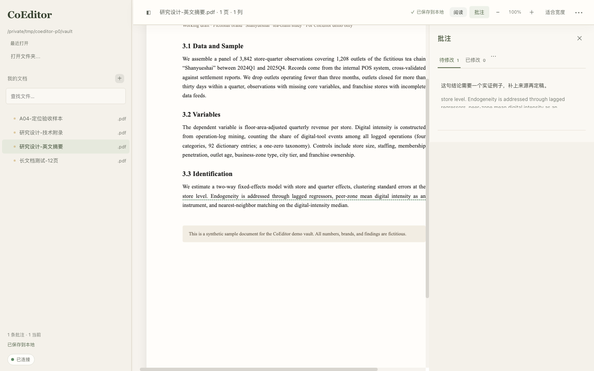

CoEditor · 文档与 AI，一起改
哪里想改，
就写在哪里。
在 Agent 的浏览器侧边栏打开文档，选中一句话，留下修改意见。下次继续写，这些批注还在。
v1.6.0 公开测试版 · 开源 · 本地保存
暂无预编译安装包，源码启动需要 Node.js 18 或更新版本。查看安装步骤

读到哪里，改到哪里。
论文里待补的解释，简历里想留下的经历，都可以直接标在原文上。
写批注
在原文上指出哪里要改。正文出现绿色虚线，右侧出现一条意见卡，停手就自动保存。
标记保留
这段写得好、不要动。极淡的暖黄底，不额外划线；Agent 改稿时不得删除或改写它。
提出删除
给多余的句子加上删除线。原文暂时留下，供改稿时核对。
一段示例，看看批注怎样留在正文里。
改过之后，要求还在
批注和引用原文一起保存。重新打开文档，或让已接入的 Agent 在新会话里读取，都能接着上次的意见往下改。
已处理的会变灰
Agent 标记已处理后，对应意见变灰。你可以回看原来的要求，核对改稿结果。
保留是长期的
保留要求持续提供给 Agent，直到你主动取消。改稿后可核对这些内容是否还在。
找不到原文会说清楚
原来的句子已被替换时，批注会提示原文变化，并留下当时的引用供你查阅。
你的文件，继续用原来的格式
同一个文件夹里的 PDF、Markdown 和 HTML，可以放在一起阅读。编辑能力随文件格式而有所不同。
| 格式 | 阅读 | 编辑 | 边界 |
|---|---|---|---|
| Markdown / TXT | 支持 | 全文编辑 | 保存有版本锁，外部改过会被拒绝而不是覆盖 |
| HTML | 原布局，隔离渲染 | 源码 + 就地改字 | 不执行脚本，外链资源默认阻断 |
| JSON / CSV | 支持 | 支持 | — |
| 连续页 + 文字层 | 不做 PDF 原文编辑 | 只做批注 / 保留 / 删除建议；扫描件只能框选区域（不做 OCR） | |
| DOCX | 尽力还原布局 | 文字替换 | 复杂表格 / 页眉脚不保证不变形，未知结构降级处理 |
| PPTX | 文字模式 | 文字替换 | 完整幻灯片排版预览需要可选的本地组件（LibreOffice），不随包提供、不自动安装 |
| 图片 | 原比例 | — | 区域批注，坐标按缩放归一化保存 |
PPT 默认提供文字模式。需要查看完整幻灯片排版时，可以另外安装 LibreOffice，安装步骤见帮助页面。
开始只需打开文件夹
准备好 Node.js 18 或更新版本，下载源码即可启动。运行所需的依赖已包含在仓库中。
git clone https://github.com/DHLbigmonster/CoEditor.git cd CoEditor
node server.mjs ~/Documents终端会打印一个
127.0.0.1 地址，用浏览器打开即可。
状态灯的含义：连接 Agent（还没接过）→ 等待 Agent 读取（配置已就绪）→ 已连接（确实有 Agent 读过批注）。
连接 Agent 需要一次配置。你也可以先用 CoEditor 阅读和批注，稍后再连接。
常见问题
会把我的文件上传到服务器吗？
不会。本地服务只监听 127.0.0.1，不联网、不上传。批注写在你自己文档目录下的
.marginalia/annotations.json 里。
它内置 AI 吗？
不内置。CoEditor 负责「人在原文上留下要求」，执行改稿的是你自己的 Agent。没有连接 Agent 时，阅读和批注照常可用。
支持哪些 Agent？
通过 MCP 接入。MCP 服务在本地实测过握手与工具列表，但我们还没有在真实宿主的图形界面里端到端点通， 所以不声称「兼容所有 Agent」。接入方式对任何支持 MCP 的客户端都是同一份配置。
PPT 为什么还需要额外组件？
PPT 是二进制版式格式，完整排版还原需要一整套转换器。我们不想把它塞进安装包（体积和信任成本都太高）， 所以做成可选：不装就走文字模式，装了才有逐页排版预览。
能直接改 PDF 吗？
不能，这是有意的。PDF 保持只读，你只能在上面写批注 / 保留 / 删除建议，改动交给 Agent 落到源文件上。
删掉 CoEditor，我的批注还在吗？
在。批注写在文档目录的 sidecar 文件里，不在应用内部。删掉应用不会删掉文档和批注。
不连接 Agent 能用吗？
能。阅读、编辑、批注、保留、历史全部可用；只是这些要求不会被自动带给 Agent。